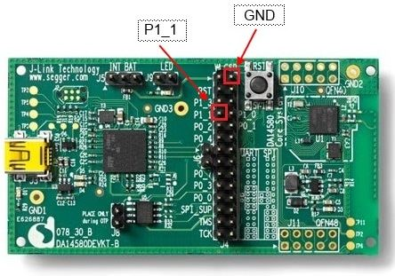

Dialog Semiconductor Blinky
Control your DA1458x DK. The application demonstrates the functionality of the DA1458x Development Kit. It is a simple application which demonstrates basic initialization of the DA1458x and LED blinking. A user can control the LED on the Development Kit (DK) via the application on his smartphone.
A Bluetooth Low Energy connection is set up between the DK and the smartphone. The user interface on the smartphone consists of a button to turn the LED on or off, and a slider to control the blinking speed of the LED. A push button can be added to the DK as an extra component. Pressing the button changes the background colour on the mobile device to demonstrate the connection is bidirectional.
The overflow button in the upper-right corner allows the user to open a settings menu in which the Bluetooth scantime can be set. The app automatically stops scanning for Bluetooth devices after a certain time to save the phone’s battery.

Source code
You can browse the source code for this example at the Evothings GitHub repository.
The file index.html is the main HTML file of the app. You can find custom CSS in app.css
In file app.js you will find the JavaScript code for the app.
The directory DA1458x contains the binaries for the DA14580/1/3. These files contain the generated firmware needed to blink the LED and add the GPIO button functionality.
What you need
This example works with the DA1458x Development Kit. Visit dialog-semiconductor.com for further details.
Using Dialog’s SmartSnippets Bluetooth software platform you can store the image file to flash memory of the device. The SmartSnippets software can be found on Dialog’s customer support site (registration required).
Run the app in Evothings Viewer on Android or iOS.
Optionally, you can include a GPIO push button for more functionality. For this example, a GPIO push button from Elektor’s Aruidno 37 Sensor Kit is used. The PCB mounted push button has a built in 10k Ohm resistor connected between the center pin and the ‘S’ pin and can be used as a pull up or pull down resistor. The push button connects the two outer pins (‘S’ and ground). The ‘S’ pin is connected to pin P1_1 on the DK, and the ground pin to one of the available ground pins on the DK. See the user manual on Dialog’s customer support site (registration required) for more information.
For example, the push button on the DA14580 Development Kit is connected as follows:
An iOS device (7+) or an Android device with support for Bluetooth 4.0 (which includes BLE) is required. For Android, version 4.3 or later is needed.
How to get up and running
Follow these steps to get started with this example:
- Turn on the DA1458x Development Kit (make sure to use the correct firmware).
- Run Evothings Workbench on your desktop/laptop.
- Run Evothings Viewer on a mobile device and connect to the workbench.
- Launch the example “Dialog Semiconductor Blinky” from the Workbench window in the ‘EXAMPLE’ tab by pressing ‘RUN’.
- In the app, ‘SCAN’ and ‘CONNECT’ to your development kit and blink away!
- EXTRA – If you have a GPIO push button connected, the background color of the application will randomly change if you press the button.
Hackster.io
Read more about this example and how to build your own firmware for the DA1458x Development Kit on Hackster.io.